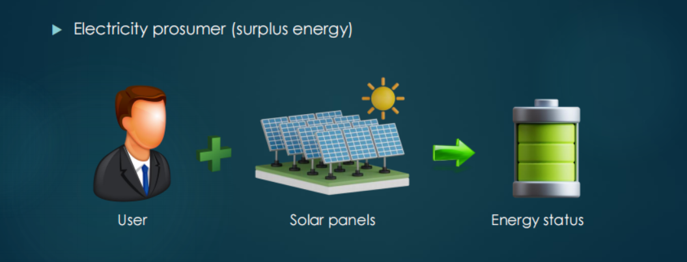
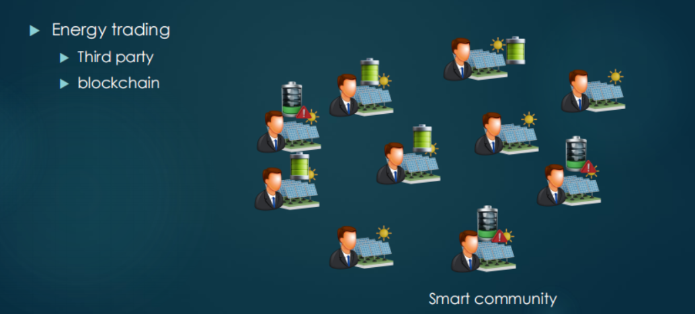
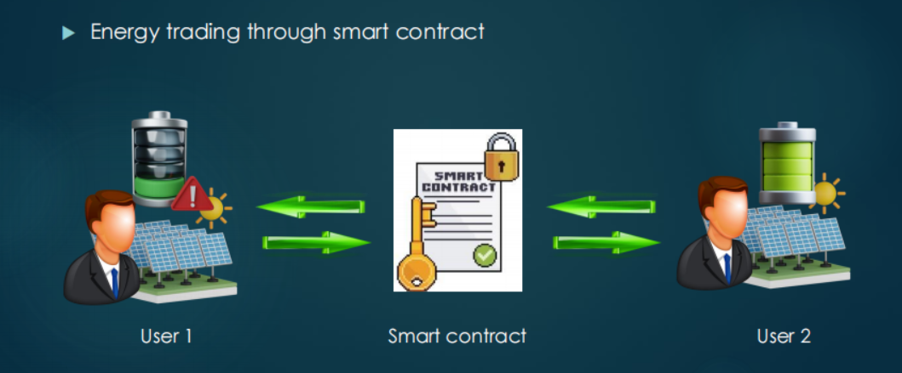
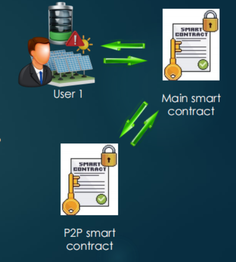

Assignment
1.Assignment guidance
Consider a smart community of electricity prosumers (electricity consumers who also produce electricity). There can be a mismatch between energy demand of a prosumer and the produced energy during a specific time interval. When a prosumer produces more energy than its requirement, it can sell it to the other prosumers of the community who do not have enough energy to fulfill their need. Traditionally, a third party manages the trading of electricity between prosumers; however, a significant cost is paid to the third party for its services and the system is prone to security and privacy issues. To mitigate these challenges, a blockchain based energy trading mechanism emerged as a promising solution. In this coursework, you are required to design a smart contract for peer-to-peer (P2P) energy trading between electricity prosumers.

Develop a main smart contract for energy trading for a local energy market where prosumers send requests for buying and selling energy. The smart contract should match the energy requests of buyers with sellers and trade the energy. In the smart contract, the prosumers must register before taking part in energy trading. When a new prosumer is registered on the network, a smart wallet for the prosumer is automatically created by the smart contract. To purchase the energy, a prosumer must have Ethers in his smart wallet (user can send ethers to smart contract). A registered prosumer should be able to send energy surplus (sell) or deficit (buy) request to the main smart contract: positive value for surplus energy and negative value for deficit energy.

On getting the request, the main smart contract should check if the requester is buyer or seller and call the respective energy trading function of P2P smart contract (in case of buyer, main smart contract also checks if the buyer has sufficient balance in his smart wallet to purchase the required amount of energy, for instance, assume for 1 unit of energy, a buyer needs to pay 1 Ether). On getting the energy buying request, the P2P smart contract should first find the available energy seller in the market who has sufficient surplus energy to fulfill the energy requirement of the buyer. In case no seller is available, the buyer’s request should be added to the queue. Similarly, on getting the energy selling request, the P2P smart contract should first find the energy buyer in the market (queue) whose energy demand can be fulfilled by the seller; otherwise, the seller is added to the available seller’s queue. After energy trading, the information should be stored in the blockchain (records of both buyer and seller should be updated), and payment of energy should be added to the energy seller’s account (smart wallet). For each prosumer, its ID(address), energy status (how much energy it needs to buy or sell), and balance (Ethers in smart wallet) must be stored in the blockchain as a record and it must be updated after the prosumer takes part in energy trading. A prosumer should be able to withdraw his Ethers from smart wallet.

Traditionally, the electricity prosumers prefer to store the surplus energy in the local energy storage system (ESS) instead of selling it to the buyers. They use this energy instead of buying energy from other sellers when they are in energy deficit. Propose (and implement in the smart contract) an incentive mechanism for the energy sellers and buyers to encourage them to take part in energy trading.
2.Assessment tasks
The following functions must be the part of the smart contracts. (The smart contracts are not limited to only these functions. You can add more functions as per requirement.)
P2P smart contract
(a) A structure to store information of prosumers. The information must include a prosumer’s ID (address), energy status (how much energy it needs to buy or sell), and balance (Ethers in smart wallet). You can also add more information as per requirements. Note that the data of buyers and sellers should not be stored separately, it should be stored in the same structure named “prosumer”. The data related to prosumers will only be stored in P2P smart contract. No more than one struct shall be used to store information.
(b) A function to register a new prosumer (add information of a new prosumer). Initially, only address of the user is added as its ID.
(c) Add functions to buy and sell energy.
Main smart contract
(a) Modifier function to make sure a prosumer is registered in the system before sending any request.
(b) Modifier function to ensure single registration of a prosumer (if an already registered prosumer request for the registration again, the function should send an error message saying the user is already registered).
(c) A modifier function to check whether a buyer has deposited sufficient funds (Ethers required to purchase the required amount of energy) to buy energy in the smart wallet.
(d) A public function to register a prosumer. A prosumer only calls this function to get registered (prosumer does not pass any value). The function checks (using the modifier function) the prior registration of the prosumers. If prosumer is already registered, the error message is generated (by the modifier function) to show that prosumer is already registered; otherwise the address of the new prosumer is sent to the P2P smart contract for storage (registration).
(e) A public function to enable a buyer to deposit some Ethers prior to energy buying request. The prosumer dose not pass any value to the function.
(f) A public function to accept prosumers’ requests and check if a prosumer has sent an energy selling or buying request and pass the data to the P2P smart contract. A prosumer passes positive value if he is a seller and negative value if he is a buyer. For example, if a buyer needs 3 units of energy, he will send -3 as input. The negative sign shows that the buyer needs the energy. On the contrary, if a seller wants to 3 units of energy, it will send 3 as an input. The positive 3 shows that the user has surplus energy to sell.
(g) A public function to check the current energy status of a seller or buyer (the amount of energy a buyer wants to buy or a seller
wants to sell). The function should not have any input arguments.
(h) A public function to check the balance of a prosumer. The function should not have any input arguments.
(i) A public function to withdraw the Ethers from smart wallets of prosumers. The function should not have any input arguments.(Note: funds can be withdrawn for a prosumer if his energy status is greater than or equal to zero, which means the prosumer does not need to buy energy at the moment.)

Scenario to implement
Consider a scenario of a smart community with 20 electricity prosumers with unique addresses. All of the prosumers are registered on the blockchain. Suppose 10 prosumers are energy deficit and send the energy buying request to the smart contract. For each prosumer, randomly select energy deficit status (amount of required energy) between (1-6) units. On the other hand, 10 prosumers have surplus energy and choose their energy status (the amount of energy they want to sell) between (1-8) units. Send the requests of prosumers to the smart contract randomly and observe the behaviour of the system according to the instructions given above. Create a table and add the following information of all 20 prosumers in it:
(a) Address
(b) Initial energy status before energy trading
(c) Balance in the smart wallet before energy trading
(d) Energy status after energy trading
(e) Balance in smart wallet after energy trading
Incentive Mechanism
I build communities where prosumers buy and sell energy.
In order to allow prosumers who have excess energy to sell their energy instead of hoarding it themselves. There needs to be an incentive for him/her to sell his/her energy.
First of all, let me explain that the normal price of each energy in our energy community is 1ether, that is, 10^18wei. At the same time, if the transaction is successful, both parties will be charged a 5% handling fee (assuming 5% is the market price, that is to say, other energy communities are charged as well).
In order to allow more users to participate in the community, I will first add a part of my own ether as an incentive pool.
The incentive mechanism is mainly divided into three parts:
First order incentive: No handling fee is required for the first transaction.
Follow-up incentives: Every time you successfully complete a transaction (excluding the first order), it means that your credit value is more secure, so transaction security risks are reduced. Therefore, every time you complete an order, you will be charged 0.1% less handling fee, with a maximum limit of 3%, that is, you will be charged a minimum of 2% handling fee.
Luck incentive: Each user will have a 1% probability of free handling fee(not the first order); and there will be 1% eth return for buyers, and 1% eth for sellers as rewards, and the upper limit is 1ether.
Note: Although no handling fee is charged for the first transaction, it is necessary to ensure that the balance in the account is sufficient to pay the handling fee. We promise and provide channels to return eth to your smart wallet, please feel free to use it!
Code
// SPDX-License-Identifier: MIT
pragma solidity ^0.8.0;
contract P2P {
// a) a structure to sore information of prosumers
struct Prosumer {
address pid; // address
int energyStatus; // negative: amount of required energy; positive: the amount of energy they want to sell
uint balance; // wei in smart wallet(10^18 wei = 1 ether)
bool frozenBalance; // Funds are frozen if in progress
bool completeFirstTrading; // Whether to complete the first transaction
uint incentivePoints; // Credit(is the number of successful transactions after the non-first order)
}
// Quickly get the prosumer through the address
mapping (address => Prosumer) internal prosumers;
// Scenario to implement: Suppose 10 prosumers are energy deficit, and other 10 prosumers have surplus energy
bool internal odd = false;
// seed for generating random numbers
uint256 internal seed = 5423633257245624352373;
// Store the address of the prosumer who wants to buy energy
address[] internal buyQueue;
// Store the address of the prosumer who wants to sell energy
address[] internal saleQueue;
// Incentive mechanism: the upper limit is exempt from 3% handling fee
uint internal incentivePointThreshold = 30;
// Incentive mechanism: the upper limit of cashback is 1 ether
uint internal cashBackThreshold = 10**18;
// Incentive mechanism: normal handling fee is 5%
uint internal perOfDandlingFee = 50;
// Energy and Balance Modified Log
event printTradingLog(string message, address buyer, address seller, int energyNum, uint balanceNum);
// luck: Whether the luck incentive is activated;
// incentiveCashBack: cashback amount;
// handlingFee: handling fee;
event printOtherFeeLog(string message, address addr, bool luck, uint incentiveCashBack, uint handlingFee);
// Logs of users in the queue
event printQueueLog(string queueName, address addr);
// b) register a new prosumer
function register(address addr) external {
prosumers[addr] = Prosumer(
{
pid: addr,
energyStatus: odd == true ? random(1, 6, false) : random(1, 8, true),
balance: 0,
frozenBalance: false,
completeFirstTrading: false,
incentivePoints: 0
}
);
odd = !odd;
}
// c) buy and sell energy(Contains multiple functions to complete)
function trading(address buyer, address seller, int energyNum) internal {
uint balanceChange = uint(energyNum * (10**18));
// handling energy
emit printTradingLog("energy status and balance start changing", buyer, seller, energyNum, balanceChange);
modifyEnergyStatus(buyer, energyNum);
modifyEnergyStatus(seller, -energyNum);
// handling balance
decBalance(buyer, balanceChange);
incBalance(seller, balanceChange);
emit printTradingLog("energy status and balance finish changing", buyer, seller, energyNum, balanceChange);
// handling other fee
if(getCompleteFirstTrading(buyer)) {
otherFee(buyer, energyNum);
}
if(getCompleteFirstTrading(seller)) {
otherFee(seller, energyNum);
}
}
// Match buyers and sellers
function matchRequest() external returns(int, int) {
// Index of marked completed transactions
int markBuyIndex = -1;
int markSaleIndex = -1;
for(uint i = 0; i < buyQueue.length; i++) {
Prosumer storage buyer = prosumers[buyQueue[i]];
for(uint j = 0; j < saleQueue.length; j++) {
Prosumer storage seller = prosumers[saleQueue[j]];
// Seller can fully meet the need of buyer
if(seller.energyStatus >= -buyer.energyStatus) {
int transferEnergy = -buyer.energyStatus;
// Transactions dealing with energy and balance
trading(buyQueue[i], saleQueue[j], transferEnergy);
if(seller.energyStatus == 0) {
// If the energy of the seller is 0, mark it
markSaleIndex = int(j);
// Transaction completed, unfreeze
setFrozenBalanceOfProsumer(saleQueue[j], false);
setCompleteFirstTrading(saleQueue[j], true);
}
// mark buyer
markBuyIndex = int(i);
// Transaction completed, unfreeze
setFrozenBalanceOfProsumer(buyQueue[i], false);
// Transaction completed, set to true
setCompleteFirstTrading(buyQueue[i], true);
break;
// Seller can't fully meet the need of buyer
} else {
int transferEnergy = seller.energyStatus;
// Transactions dealing with energy and balance
trading(buyQueue[i], saleQueue[j], transferEnergy);
// mark seller
markSaleIndex = int(j);
// Transaction completed, unfreeze
setFrozenBalanceOfProsumer(saleQueue[j], false);
// Transaction completed, set to true
setCompleteFirstTrading(saleQueue[j], true);
}
}
}
return (markBuyIndex, markSaleIndex);
}
// Remove the completed matching requests from the queue
function adjustQueue(int buyerIndex, int sellerIndex) external {
// If it is -1, it means that remove is not required
if(buyerIndex != -1) {
uint bIndex = uint(buyerIndex);
for(uint x = bIndex + 1; x < buyQueue.length; x++) {
// The original location needs to be freed first, otherwise it will occupy memory
delete buyQueue[x - bIndex - 1];
buyQueue[x - bIndex - 1] = buyQueue[x];
}
for(uint x = bIndex; x >= 0; x --) {
buyQueue.pop();
// uint will not be less than 0, so special judgment is required
if(x == 0) {
break;
}
}
}
if(sellerIndex != -1) {
uint sIndex = uint(sellerIndex);
for(uint y = sIndex + 1; y < saleQueue.length; y++) {
delete saleQueue[y - sIndex - 1];
saleQueue[y - sIndex - 1] = saleQueue[y];
}
for(uint y = sIndex; y >= 0; y --) {
saleQueue.pop();
if(y == 0) {
break;
}
}
}
}
// modify energy status
function modifyEnergyStatus(address addr, int energyNum) internal {
prosumers[addr].energyStatus += energyNum;
}
// increase balance
function incBalance(address addr, uint amount) internal {
prosumers[addr].balance += amount;
}
// decrease balance
function decBalance(address addr, uint amount) internal {
prosumers[addr].balance -= amount;
}
// Calculate the rebate amount and cannot exceed the maximum value
function calculateTheCashBackAmount(uint val) internal view returns (uint) {
return cashBackThreshold >= val ? val : cashBackThreshold;
}
// Whether to trigger the luck incentive mechanism
function luckIncentive() internal view returns (bool) {
return random(1, 100, true) == 1 ? true : false;
}
// Calculate handling fees
function getHandlingFee(address addr, int energyNum) public view returns (uint) {
return uint(uint(energyNum) * (perOfDandlingFee - prosumers[addr].incentivePoints) * (10**15));//10^18/1000
}
// Settlement of all fees except for normal energy transaction payments
function otherFee(address addr, int energyNum) internal {
if(luckIncentive()) {
uint incentiveCashBack = calculateTheCashBackAmount(uint(energyNum) * (10**16));//10^18/100
incBalance(addr, incentiveCashBack);
emit printOtherFeeLog("otherFee", addr, true, incentiveCashBack, 0);
} else {
uint handlingFee = getHandlingFee(addr, energyNum);
decBalance(addr, handlingFee);
emit printOtherFeeLog("otherFee", addr, false, 0, handlingFee);
}
incIncentivePointsOfProsumer(addr);
}
// Add to the buyer or seller queue based on Boolean values
function queuing(address addr, bool buyerQueue) external {
if(buyerQueue) {
buyQueue.push(addr);
emit printQueueLog("buyer", addr);
} else {
saleQueue.push(addr);
emit printQueueLog("seller", addr);
}
setFrozenBalanceOfProsumer(addr, true);
}
// get set
function getCompleteFirstTrading(address addr) internal view returns (bool) {
return getProsumer(addr).completeFirstTrading;
}
function setCompleteFirstTrading(address addr, bool flag) internal view {
getProsumer(addr).completeFirstTrading = flag;
}
// get set
function getFrozenBalanceOfProsumer(address addr) external view returns (bool) {
return getProsumer(addr).frozenBalance;
}
function setFrozenBalanceOfProsumer(address addr, bool state) internal {
prosumers[addr].frozenBalance = state;
}
// get
function getProsumer(address addr) internal view returns(Prosumer memory) {
return prosumers[addr];
}
function getEnergyStatusOfProsumer(address addr) external view returns (int) {
return getProsumer(addr).energyStatus;
}
function getBalanceOfProsumer(address addr) external view returns (uint) {
return getProsumer(addr).balance;
}
// get inc
function getIncentivePointsOfProsumer(address addr) external view returns (uint) {
return getProsumer(addr).incentivePoints;
}
function incIncentivePointsOfProsumer(address addr) internal {
if(incentivePointThreshold > prosumers[addr].incentivePoints) {
prosumers[addr].incentivePoints += 1;
}
}
// modify balance by wei(10^18wei=1ether)
function incBalanceByEth(address addr, uint256 value) public payable {
prosumers[addr].balance += value;
}
function decBalanceByEth(address addr, uint256 amount) public {
prosumers[addr].balance -= amount;
}
function regitered(address addr) external view returns(bool) {
if(prosumers[addr].pid == address(0x0)) {
// The Prosumer object corresponding to this address has not been created yet
return false;
} else {
return true;
}
}
// Generate random numbers according to the interval, and you can specify whether they are negative or positive
function random(uint256 from, uint256 to, bool positive) internal view returns (int256) {
require(from < to, "The interval size should be a positive number!");
uint256 randomNumber = uint256(keccak256(abi.encodePacked(seed, block.timestamp)));
uint256 range = to - from + 1;
int256 randomRangeNumber = int256((randomNumber % range) + from);
return positive == true ? randomRangeNumber : -randomRangeNumber;
}
}
contract ElecCommunity {
// main smart contract interacts with p2p smart contract.
P2P internal p2p;
// Create p2p first, and then pass in the contract address
constructor(address addr) {
p2p = P2P(addr);
}
// function call log
event printCallingFuncLog(string contractName, string funcCalling, address sender);
// ether change log
event printEtherChangeLog(address sender, string operation, uint amount);
// a) make sure a prosumer is registered
modifier haveRegistered {
require(p2p.regitered(msg.sender), "Need to register first!");
_;
}
// b) ensure single registration of a prosumer
modifier unregistered {
require(!p2p.regitered(msg.sender), "Already registered!");
_;
}
// c) check whether a buyer has deposited sufficient funds
modifier checkBuyerDeposit(address addr) {
require(p2p.getBalanceOfProsumer(addr) >= uint(-p2p.getEnergyStatusOfProsumer(addr) * 10**18) + p2p.getHandlingFee(addr, -p2p.getEnergyStatusOfProsumer(addr)), "Balance isn't enough to purchase energy!");
_;
}
// d) register a prosumer
function register() public unregistered {
emit printCallingFuncLog("ElecCommunity", "start calling function register", msg.sender);
p2p.register(msg.sender);
emit printCallingFuncLog("ElecCommunity", "finish calling function register", msg.sender);
}
// e) deposit some ethers
function addEthers() public payable haveRegistered {
emit printEtherChangeLog(msg.sender, "begin adding", msg.value);
p2p.incBalanceByEth(msg.sender, msg.value);
emit printEtherChangeLog(msg.sender, "end adding", msg.value);
}
// f) accept prosumers' requests
function tradingRequest() public haveRegistered {
emit printCallingFuncLog("ElecCommunity", "start calling function tradingRequest", msg.sender);
// join the queue
addQueue(msg.sender);
// matching
(int buyerIndex, int sellerIndex) = p2p.matchRequest();
// Remove users from queue who have completed transactions
p2p.adjustQueue(buyerIndex, sellerIndex);
emit printCallingFuncLog("ElecCommunity", "finish calling function tradingRequest", msg.sender);
}
// g) check the current energy status of a seller of buyer
function isBuyer(address addr) internal view returns (bool) {
return p2p.getEnergyStatusOfProsumer(addr) > 0 ? false : true;
}
// h) check balance of a prosumer
function checkBlanceBefWithdraw(address addr, uint256 amount) internal view returns (bool) {
return p2p.getBalanceOfProsumer(addr) >= amount ? true : false;
}
// i) withdraw the wei(10^18=1eth) from smart wallets of prosumers
function withdrawEthers(uint256 amount) public haveRegistered needActiveState(msg.sender) {
require(checkBlanceBefWithdraw(msg.sender, amount), "Not enough balance!");
emit printEtherChangeLog(msg.sender, "begin withdrawing", amount);
p2p.decBalanceByEth(msg.sender, amount);
payable(msg.sender).transfer(amount);
emit printEtherChangeLog(msg.sender, "end withdrawing", amount);
}
// Prevent funds from being withdrawn when trading
modifier needActiveState(address addr) {
require(!p2p.getFrozenBalanceOfProsumer(addr), "You can do this operation after trading!");
_;
}
// join buyer queue
function addBuyerQueue(address addr) internal checkBuyerDeposit(addr) {
p2p.queuing(addr, true);
}
// join seller queue
function addSellerQueue(address addr) internal checkSellerDeposit(addr) {
p2p.queuing(addr, false);
}
// check seller's deposit
modifier checkSellerDeposit(address addr) {
require(p2p.getBalanceOfProsumer(addr) >= p2p.getHandlingFee(addr, p2p.getEnergyStatusOfProsumer(addr)), "Balance isn't enough to pay handling fee!");
_;
}
// judge and join queue
function addQueue(address addr) internal needActiveState(addr) {
bool buyerFlag = isBuyer(addr);
buyerFlag == true ? addBuyerQueue(addr) : addSellerQueue(addr);
}
}
Table of system behavior
| Address | Energy(before) | Balance(before) | Energy(after) | Balance(after) |
|---|---|---|---|---|
| 0x5B38Da6a701c568545dCfcB03FcB875f56beddC4 | 1 | 1 | 0 | 2 |
| 0xAb8483F64d9C6d1EcF9b849Ae677dD3315835cb2 | -4 | 6 | 0 | 2 |
| 0x4B20993Bc481177ec7E8f571ceCaE8A9e22C02db | 6 | 2 | 0 | 8 |
| 0x78731D3Ca6b7E34aC0F824c42a7cC18A495cabaB | -6 | 7 | 0 | 1 |
| 0x617F2E2fD72FD9D5503197092aC168c91465E7f2 | 3 | 2 | 0 | 5 |
| 0x17F6AD8Ef982297579C203069C1DbfFE4348c372 | -5 | 8 | 0 | 3 |
| 0x5c6B0f7Bf3E7ce046039Bd8FABdfD3f9F5021678 | 5 | 3 | 0 | 8 |
| 0x03C6FcED478cBbC9a4FAB34eF9f40767739D1Ff7 | -3 | 9 | 0 | 6 |
| 0x1aE0EA34a72D944a8C7603FfB3eC30a6669E454C | 7 | 1 | 0 | 8 |
| 0x0A098Eda01Ce92ff4A4CCb7A4fFFb5A43EBC70DC | -5 | 6 | 0 | 1 |
| 0xCA35b7d915458EF540aDe6068dFe2F44E8fa733c | 3 | 4 | 0 | 7 |
| 0x14723A09ACff6D2A60DcdF7aA4AFf308FDDC160C | -5 | 7 | 0 | 2 |
| 0x4B0897b0513fdC7C541B6d9D7E929C4e5364D2dB | 7 | 2 | 0 | 9 |
| 0x583031D1113aD414F02576BD6afaBfb302140225 | -3 | 6 | 0 | 3 |
| 0xdD870fA1b7C4700F2BD7f44238821C26f7392148 | 4 | 1 | 0 | 5 |
| 0xFedA05F598803923A2Dd114483E57a1C423353E5 | -5 | 6 | 0 | 1 |
| 0x2651d6bE063936368022c7C54608716e2d843333 | 3 | 2 | 0 | 5 |
| 0xA1D603FD36eA19d374774c0bD81c88B5Dd07C6af | -4 | 8 | 0 | 4 |
| 0x49a04437F0154F02536fF7000fB4bcf679487DA6 | 7 | 4 | 0 | 11 |
| 0x6A47F9a7b058EBbee1F8B8F42766F5A4d66aE1Fd | -6 | 9 | 0 | 3 |
Note: In fact, when I first got this result, I felt a bit unexpected, but after checking and calculating, there is indeed no problem. The energy of buyers and sellers in this experiment just offset (The absolute value of both sides is 46).
Improvements
In fact, I didn’t add too many new features to smart contract, most of the features not mentioned in the documentation are authored for the incentive mechanism, which has already been explained in the first point. In addition, there are some new functions, such as random functions, which are used to generate random values, and some getter and setter functions are used to obtain the information of fields in prosumer, and I also added some event functions to the smart contract to print and track logs. Finally, each of my functions has comments for easy understanding.